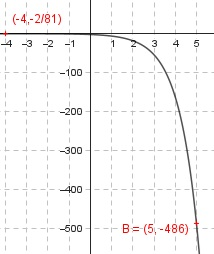

Aufgabe 19 Wie lautet die Funktionsgleichung einer Funktion der Form y = q*ax, wenn sie durch die Punkte (5|-486) und (-4|-2/81) geht? y = q * ax x1 = 5 , y1 = -486 x2 = -4 , y2 = - 2/81 eingesetzt : -486 = q * a5 (1) - 2/81 = q * a-4 (2) Aus (2) : 1 - 2/81 = q * ---- | *a4 a4 2 q = - ---- * a4 81 In (1) eingesetzt : 2 -486 = - ---- * a4 * a5 | *81 81 - 39 366 = - 2 * a9 | :(-2) a9 = 19 683 a = = 3 In (1) eingesetzt: -486 = q * 35 -486 = q * 243 |:243 q = -2 y = -2 * 3x
